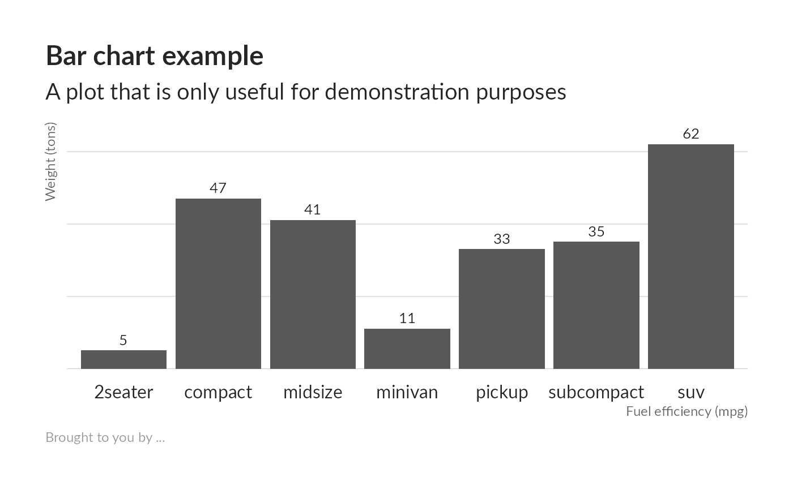

unhcr_theme provides a basic UNHCR theme
to use in ggplot2 commands.
unhcr_theme( base_family = "Lato", base_size = 12, plot_title_family = base_family, plot_title_size = base_size * 1.5, plot_title_face = "bold", plot_title_margin = base_size * 0.75, subtitle_family = base_family, subtitle_size = base_size * 1.25, subtitle_face = "plain", subtitle_margin = base_size, strip_text_family = base_family, strip_text_size = base_size, strip_text_face = "plain", caption_family = base_family, caption_size = base_size * 0.75, caption_face = "plain", caption_margin = base_size * 0.75, axis_text_size = base_size, axis_title_family = subtitle_family, axis_title_size = base_size * 0.75, axis_title_face = "plain", axis_title_just = "rt", legend_title_family = base_family, legend_title_size = base_size * 0.85, legend_title_face = "plain", legend_title = FALSE, plot_margin = margin(30, 30, 30, 30), grid_col = grey(0.8, 1), grid = TRUE, axis_col = grey(0.4, 1), axis = FALSE, ticks = FALSE )
| base_family | Base font family (optional, character).
Default: |
|---|---|
| base_size | Base font size (optional, numeric).
Default: |
| plot_title_family, plot_title_face, plot_title_size, plot_title_margin | plot title family, face, size and margin |
| subtitle_family, subtitle_face, subtitle_size | plot subtitle family, face and size |
| subtitle_margin | plot subtitle margin bottom (single numeric value) |
| strip_text_family, strip_text_face, strip_text_size | facet label font family, face and size |
| caption_family, caption_face, caption_size, caption_margin | plot caption family, face, size and margin |
| axis_text_size | font size of axis text |
| axis_title_family, axis_title_face, axis_title_size | axis title font family, face and size |
| axis_title_just | axis title font justification, one of `[blmcrt]` |
| legend_title_family, legend_title_face, legend_title_size | axis title font family, face and size |
| legend_title | legend title if `TRUE` add legend title; default `FALSE` |
| plot_margin | plot margin (specify with `ggplot2::margin()`) |
| grid_col, axis_col | grid & axis colors |
| grid | panel grid (`TRUE`, `FALSE`, or a combination of `X`, `x`, `Y`, `y`) |
| axis | add x or y axes? `TRUE`, `FALSE`, "`xy`" |
| ticks | ticks if `TRUE` add ticks |
ipda | unhcr.org | 2020
{ if (!require(ggplot2)) { install.packages('ggplot2') # installs ggplot2 library('ggplot2') # loads ggplot2 } # Check if ggplot2 is loaded: if ("ggplot2" %in% (.packages())){ message("Package 'ggplot2' is loaded.") } # if ("ggplot2" %in% (.packages())) end. library(ggplot2) library(tidyverse) # seminal bar chart update_geom_font_defaults() # seminal scatterplot ggplot(mtcars, aes(mpg, wt)) + geom_point() + labs(x="Fuel efficiency (mpg)", y="Weight (tons)", title="Seminal ggplot2 scatterplot example", subtitle="A plot that is only useful for demonstration purposes", caption="Brought to you by the letter 'g'") + unhcr_theme() count(mpg, class) %>% ggplot(aes(class, n)) + geom_col() + geom_text(aes(label=n), nudge_y=3) + labs(x="Fuel efficiency (mpg)", y="Weight (tons)", title="Seminal ggplot2 bar chart example", subtitle="A plot that is only useful for demonstration purposes", caption="Brought to you by the letter 'g'") + unhcr_theme(grid="Y") + theme(axis.text.y=element_blank()) }#>#>#> ✓ tibble 3.0.4 ✓ dplyr 1.0.2 #> ✓ tidyr 1.1.2 ✓ stringr 1.4.0 #> ✓ readr 1.4.0 ✓ forcats 0.5.0 #> ✓ purrr 0.3.4#> Conflicts ────────────────────────────────────────── tidyverse_conflicts() ── #> x readr::col_factor() masks scales::col_factor() #> x purrr::discard() masks scales::discard() #> x dplyr::filter() masks stats::filter() #> x dplyr::lag() masks stats::lag()